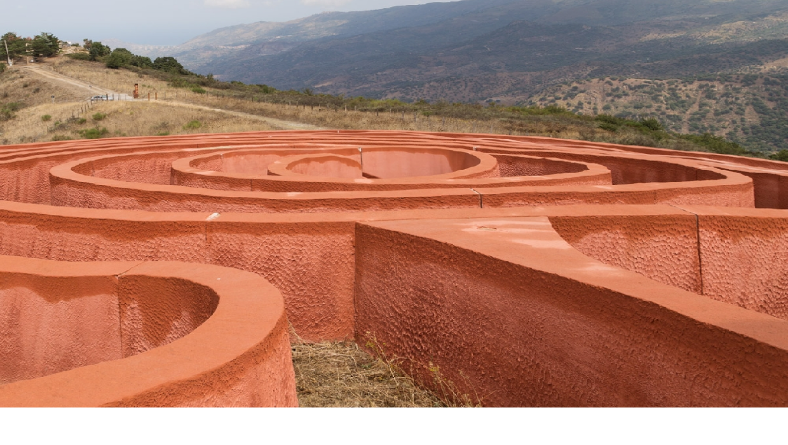

Labirinto di Arianna
Scopri l'artista
L'opera "Labirinto di Arianna" è stata selezionata nel 1988 durante un concorso bandito da Antonio Presti e si trova sulla cima di una collina di fronte a Castel di Lucio, adattandosi alla sua inclinazione naturale.
Realizzata da Italo Lanfredini negli anni '80, si distingue per il dialogo con l'osservatore, invitandolo a interagire con il luogo. Questa scultura rappresenta un percorso obbligato che si avvolge su se stesso, creando un labirinto.
L'opera affronta tre tematiche principali: la mitologia, la procreazione e un percorso obbligato. Diventata una delle principali attrattive dell'hinterland, all'epoca della sua costruzione, il vescovo dell'arcidiocesi di Patti la considerava un oltraggio a causa dell'allusione all'organo femminile, ammonendo i fedeli contro la visita al labirinto.
Il "Labirinto di Arianna" è un serpentone in calcestruzzo patinato che segue il declivio del terreno.È di tipo "classico" con un percorso unico che conduce al centro e poi all'uscita, caratterizzato da una colorazione simile alla terracotta acquisita col tempo. Tra le opere della Fiumara d'Arte, è stata la più costosa a causa della ripida strada di accesso.
Il nome richiama due miti greci: la costruzione del labirinto di Cnosso da parte di Dedalo e Icaro per Minosse e il mito di Teseo e Arianna. Il labirinto di Cnosso era destinato a rinchiudere il Minotauro, mentre Teseo, grazie al filo di Arianna, sconfigge la creatura e abbandona Arianna sull'Isola di Nasso.
Quest'ultima, in diverse versioni del mito, viene consolata, sposata da Dioniso o addirittura uccisa su richiesta di Dioniso o Artemide. Il "Labirinto di Arianna" di Lanfredini, a differenza di quello di Minosse, non mira a intrappolare, ma a guidare i visitatori in un percorso riflessivo.
La porta di accesso simboleggia il ritorno nell'utero materno per una nuova nascita, mentre l'albero di ulivo al centro rappresenta conoscenza e saggezza. Lanfredini invita alla riflessione sul rapporto uomo-ambiente, evidenziato dalla vista delle cime dei rilievi attraverso le pareti della spirale.